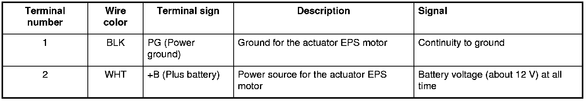
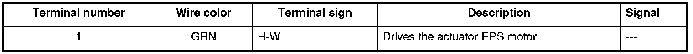
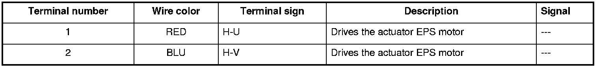
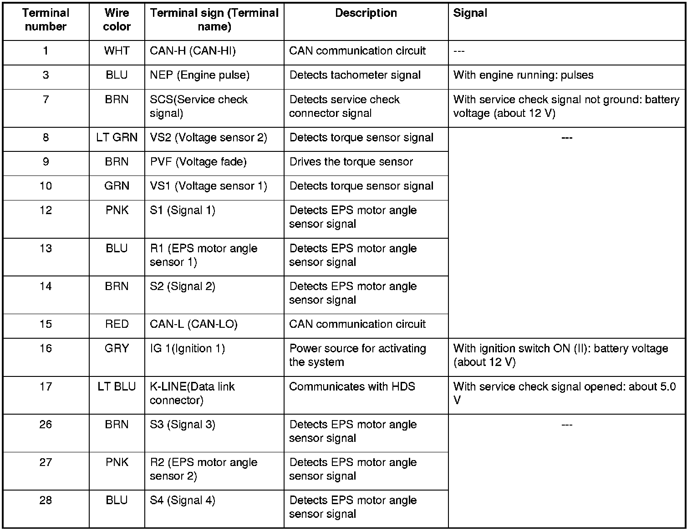
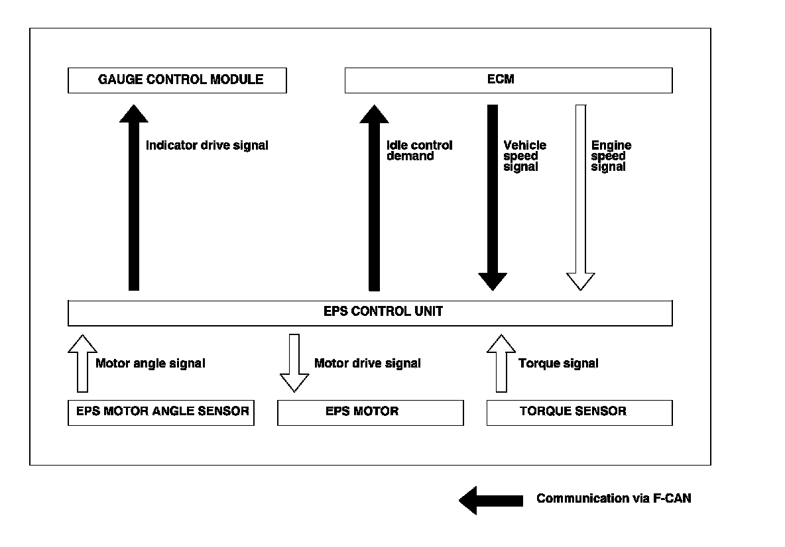
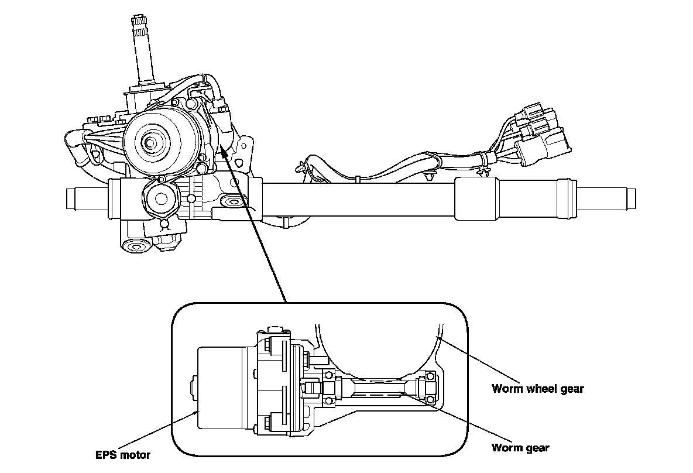
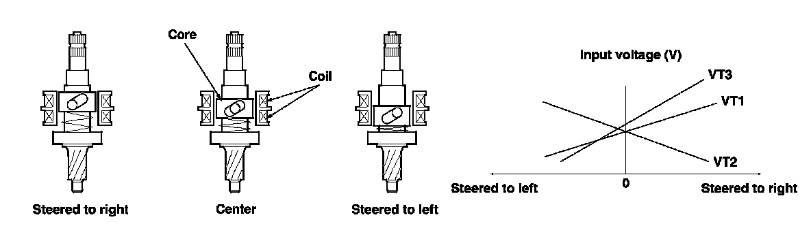

Steering: Description and Operation
EPS System Description
EPS Control Unit Inputs and Outputs for Connector A (2P) (connector disconnected)

EPS Control Unit Inputs and Outputs for Connector B (2P) (connector disconnected)

EPS Control Unit Inputs and Outputs for Connector C (2P) (connector disconnected)


EPS Control Unit Inputs and Outputs for Connector D (28P) (connector disconnected)

System Outline
The power steering system adopts the electric power steering assisting for the control force of the steering wheel in the driving force of the electric motor.
The EPS control unit is doing an appropriate steering force control according to the running situation of the vehicle (at time of low speed, lightness, by the control of emphasis and high-speed running time, control with the steady weight and the control which will be switched from low speed to high speed smoothly later) by the EPS motor.
The EPS control unit is designed for use with an automotive power steering for the primary purpose of controlling the assist motor (brushless motor) for the power steering by using as inputs the steering torque signals received from the "steering torque sensor" installed in the steering gearbox as well as the speed signals received from the "vehicle speed sensor" installed in the vehicle. In addition to the above function, the EPS control unit also provides the fail-safe function, self diagnosis function and motor output limiting function.

Steering Gearbox
The EPS motor engages with a pinion and one worm wheel gear, which is transmitted to a direct pinion, move a rack.

Torque Sensor
When the steering wheel is turned, twist occurs in the torsion bar between the steering side of the input shaft and the output shaft on the road reaction force side. Inductance is changed by the movement of the core. The amount this voltage changes (varies with the amount of movement, and direction of the core) is amplified with the interface circuitry of the sensor coil, and EPS control unit as a steer signal.
